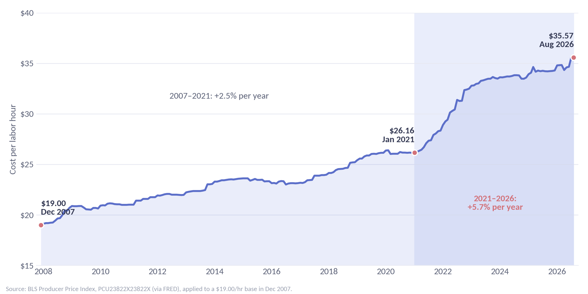
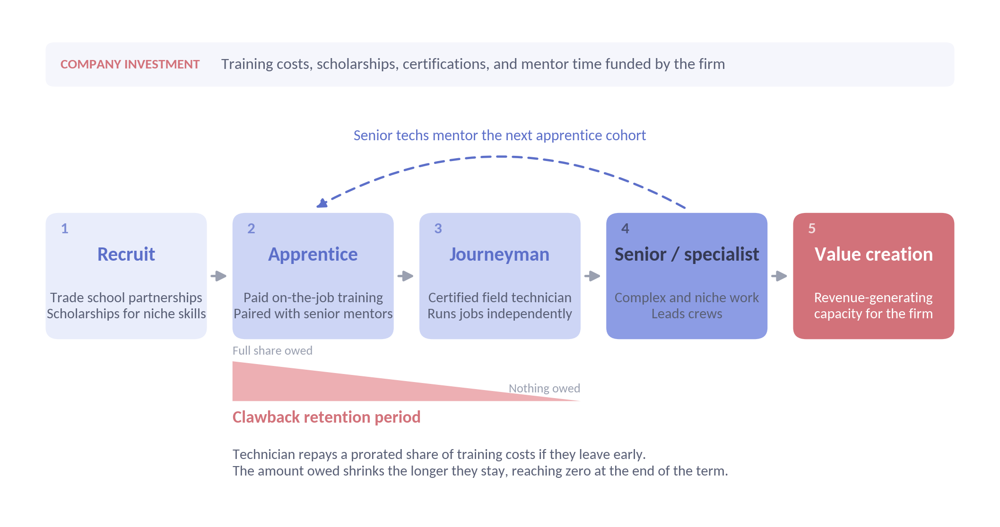

Labor as a Growth Limiter for Service-Based Businesses
In HVACR services, labor is the product, and it is getting more expensive and harder to find. Why the firms that last will build their technicians instead of recruiting them.
In the services industry, labor is the primary sell for a firm's value proposition. The question it all comes back down to when you think about can a service company grow, especially within the HVACR industry, is: do I have a steady supply of labor? It takes a phenomenal amount of labor to develop new projects and see through types of work. You not only need apprentice-level technicians but also higher-quality, more experienced technicians as well. That goes outside of the engineering team you may need to support the techs, as well as dispatchers or general sales support. Your primary inhibitor as a company in this industry is the labor procurement and retainage problem. The companies that solve this issue are the ones that stay around the longest and make the most returns over an extended period.
The labor problem becomes quite clear if we look at a single hour of work isolated across time over the past ~2 decades. We look at the base case from $19 dollars per hour from 2007 and with a price escalation based on the PPI: Plumbing, Heating and Air-Conditioning Contractors, Nonresidential Building Work (FRED: PCU23822X23822X) we can see that the same hour of work has gone up 87%, compounded 3.4% annually to $35.57. We are looking at this purely from a pricing perspective, but another aspect to consider is the supply of this labor. Obviously prices over time will go up as a basic matter of economic principle but what is driving this? The cost of labor had gone up steadily at a lower rate through 2021 where a sharp increase has occurred over the past 5 years.

The same hour of HVACR labor, 2007–2026. Source: BLS Producer Price Index PCU23822X23822X via FRED, applied to a $19.00 base.Fundamentally there is also a supply problem, the BLS estimates that job growth for HVACR techs will be 11% from 2025 to 2035, this is much higher than for the job growth overall across all sectors. The primary goal of this job creation isn't expansion driven but rather replacement driven. These hirings are made to replace technicians that are leaving the industry rather than a net growth. Furthermore, the most experienced techs are the ones that firms rely on the most and they are getting harder to replace every year. The industry must keep hiring just to stay even, not even reach steady state growth. For a firm to hire into this sector but also retain technicians, an efficiency wage must be paid, further driving up internal costs for development. The idea that a competitor can come into the industry and compete at a high level is getting harder every year with the rising costs and decreasing supply of labor. We aren't even talking about cost of material yet; we are still purely looking at labor…

Building labor instead of recruiting it: a firm-funded development pipeline, protected by a clawback retention period.The strategic point to embrace is long-term capital investment into the labor supply. Arguably, the era of small-scale players entering the space and competing on equal footing is over. As labor becomes both scarcer and more expensive, the industry is likely to consolidate into a comparatively smaller pool of firms with greater control over the sector. The firms that win will be the ones that stop treating labor as something they recruit and start treating it as something they build. That means long-term investment in technician development and training: partnerships with trade schools that establish a direct pipeline of talent into the company, scholarships that develop more niche and higher-value skills, and structured apprenticeship programs that move technicians from entry level to senior roles in-house. To protect that investment, firms can tie the training they provide to clawback provisions, under which a technician who leaves within a set period repays a prorated share of what the company spent developing them. This keeps the training free to the technician who stays, while ensuring a competitor cannot simply hire away talent the firm paid to build. Few small companies can afford to carry this cost, which is exactly why it becomes a competitive advantage for the firms that can. Larger firms that have not started this investment need to begin now. The payoff is a steady, predictable pool of trained talent that can be pushed directly into the company's value creation pipeline, turning the industry's biggest constraint into a durable edge.
In HVACR services, labor is the product, and it is getting both more expensive and harder to find. A $19.00 hour of labor in 2007 costs $35.57 today, and the pace of that increase has more than doubled since 2021, while the pipeline of new technicians refills more slowly than it drains. No one can predict exactly how the industry will evolve, but if these trends hold, the logical outcome is consolidation around the firms that can afford to build their own talent through training, apprenticeships, and clawback-protected development programs. The companies that make that investment now are the ones most likely to last and generate the strongest returns over time.